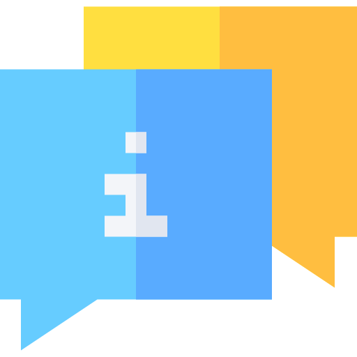
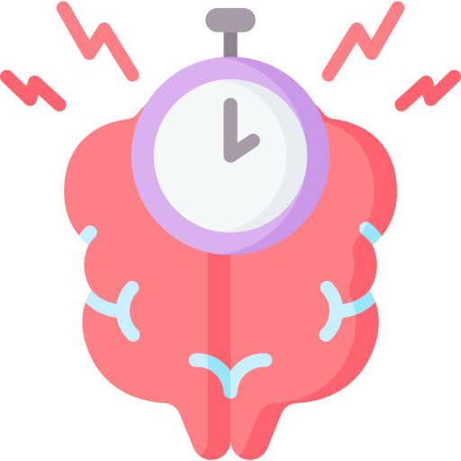
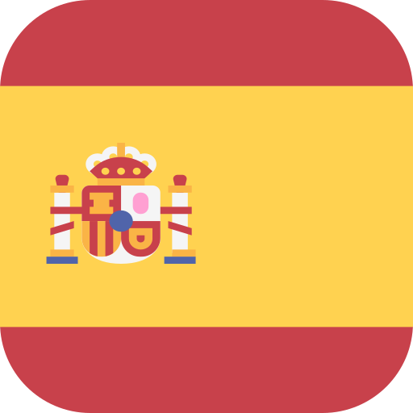

Luiz H. Consolmagno

Senior Software Engineer | DevOps Engineer | Senior Full-Stack Developer

About Me
Senior Software Engineer & DevOps Engineer
I am a Senior Software Engineer and DevOps specialist with over 15 years of experience developing sophisticated software systems for industrial, operational, and commercial environments. Throughout my career, I have honed my expertise in designing and managing advanced automation, workplace safety, tunnel construction, and industrial control systems. My technical repertoire spans from crafting tailored solutions to architecting complex systems using Python, PHP, Java, and cutting-edge automation technologies. With a proven track record in technical design, software development, DevOps practices, CI/CD pipelines, industrial infrastructure automation, and smart home automation, I am committed to streamlining processes and optimizing software delivery with precision and efficiency. I have successfully integrated security platforms such as Hikvision and Blueup and have led the deployment of access control and real-time monitoring technologies—always prioritizing the creation of secure, reliable, and user-friendly systems. Driven by a results-oriented mindset and exceptional problem-solving skills, I consistently deliver innovative, high-impact solutions. I firmly believe that true innovation flourishes through seamless collaboration between development and operations teams. My relentless passion for continuous learning fuels my growth, empowering me to embrace new challenges and implement state-of-the-art technological solutions. I am constantly exploring novel ways to leverage my expertise to build safer, more efficient, and technologically advanced environments. All of this with the goal of delivering meaningful products underpinned by clean, high-quality code.
Work Experience
DevOps Engineer
Green Solutions srl | Gruppo VGS · Full-timeGreen Solutions srl | Gruppo VGS · Full-time
Sep 2024 - Mar 2025
Trecchina, Basilicata, Italy · Hibrid
Specialized in the development and management of advanced security and automation systems for tunnel environments, mining operations, and industrial sectors.
Focused on enhancing tunnel safety systems, including gas, fire, and flood alarms, as well as advanced worker safety features such as real-time tracking and access control.
Skilled in designing and developing intuitive interfaces for desktop, Android, Linux, and IoT platforms, aimed at operational efficiency and ease of use. Experienced in automating emergency notifications to authorities and managing fully automated railway tunnel construction systems under my supervision, bringing hands-on expertise across multiple domains.
Key competencies include:
Security System Integration – Surveillance with Hikvision, access control using Blueup and Trexon TAG/BADGE systems
Software Project Management – Documentation, deployment, and seamless integration with server-side automation
Tunnel Infrastructure Management – Internal server configuration, camera and fiber optic wiring, and robotic system optimization
API & Data Handling – JSON integration and Linux server management (GNU/Linux) for industrial automation
Automated Emergency Alerts – Real-time notifications to authorities in case of incidents
Skills: SQL · Teamwork · Software Documentation · Web Project Management · Software Industry · Automation · Debugging · Bash · MongoDB · Linux Server · English · Schneider · PHP · Software Project Management · Java · Linux · Building Automation Systems (BAS) · Ubuntu · PLC Programming · MySQL · Italiano · hikvision · JSON · Symfony Framework · Programmable Logic Controller (PLC) · Software Development · GNU/Linux · Git · Resolução de problemas · Flask · Microsoft Visual Studio · C (Programming Language) · Front-End Development
Senior Software Engineer | DevOps
SIRMEC s.r.l. · ContractSIRMEC s.r.l. · Contract
Jan 2024 - Jul 2024
Senise, Basilicata, Italy · On-site
I participated in the development of tools and methods to optimize sales, packaging production, and transportation processes. The main goal was always to enhance operational efficiency through data-driven analysis and analytical reports, constantly seeking new ways to improve performance at every level.
During this time, I worked with technologies such as Java, SQL, Tomcat servers, and both Linux and Windows environments. I developed solutions that automated internal processes, integrated different departments, and eliminated manual tasks that delayed production or caused inconsistencies.
A key part of my work involved building dynamic reports and analytical dashboards that helped identify bottlenecks and opportunities for improvement — both on the production line and within the commercial area. This allowed for a clearer view of the company’s overall performance and supported more strategic decision-making.
This experience gave me the opportunity to apply my technical skills in a practical context, working end-to-end in the development cycle: from process analysis and the implementation of custom systems, to delivering robust, scalable solutions for daily use within a global company.I participated in the development of tools and methods to optimize sales, packaging production, and transportation processes. The main goal was always to enhance operational efficiency through data-driven analysis and analytical reports, constantly seeking new ways to improve performance at every level. During this time, I worked with technologies such as Java, SQL, Tomcat servers, and both Linux and Windows environments. I developed solutions that automated internal processes, integrated different departments, and eliminated manual tasks that delayed production or caused inconsistencies. A key part of my work involved building dynamic reports and analytical dashboards that helped identify bottlenecks and opportunities for improvement — both on the production line and within the commercial area. This allowed for a clearer view of the company’s overall performance and supported more strategic decision-making. This experience gave me the opportunity to apply my technical skills in a practical context, working end-to-end in the development cycle: from process analysis and the implementation of custom systems, to delivering robust, scalable solutions for daily use within a global company.
Skills: SQL · Teamwork · Software Documentation · Web Project Management · Software Industry · Automation · Debugging · Bash · Application Programming Interfaces (API) · Linux Server · eBay Sales · English · Web Development · Software Project Management · Java · Linux · Ubuntu · Software Development Life Cycle (SDLC) · eBay API · MySQL · Italiano · Software Infrastructure · JSON · Eclipse · Software Development · Spring Boot · GNU/Linux · Git · Resolução de problemas · Spring Framework · Microsoft Visual Studio · Front-End Development
DevOps Engineer | Senio Software Engineer
Vemar · Full-time
Mar 2023 - Dec 2023
Paterno, Basilicata, Italy · Hybrid
During my time at the company, I participated in a challenging project focused on developing an integrated automation solution that combined residential and industrial technologies, with an emphasis on IoT and intelligent control systems. The goal was to create a robust, efficient, and user-friendly system capable of integrating diverse devices and technologies within a single ecosystem.
In this project, I worked with Python, Ruby, and PHP to develop the automation logic and backend services. I used Raspberry Pi, Arduino, and ESP-based devices as the foundation for the embedded systems. The entire environment was built on Linux in headless configurations, optimized for performance and stability.
I implemented protocols such as MQTT, Z-Wave, and REST APIs to ensure seamless communication between devices from different manufacturers and standards. This enabled successful integration with solutions like Sonoff, Shelly, Tapo, Philips Hue, and Samsung SmartThings, as well as building automation systems (BAS) and voice control via Alexa.
A key part of the project was creating an intuitive control interface designed for non-technical users, alongside integrating MongoDB to store and manage IoT data in real time. I also developed cross-platform automation scripts using Bash and Python, and implemented predictive maintenance algorithms to enhance device longevity.
As a result, we reduced system latency by approximately 40% and achieved efficient interoperability across more than 30 different device types. This was a comprehensive experience that allowed me to apply my skills practically and deliver a solid, scalable, and user-centric solution.
Skills: SQL · Teamwork · Software Documentation · Web Project Management · Automation · Debugging · Python (Programming Language) · Bash · MongoDB · Linux Server · scss · English · PHP · Linux · Building Automation Systems (BAS) · Ubuntu · Italiano · JSON · Programmable Logic Controller (PLC) · Ruby · Software Development · Home Automation · GNU/Linux · Ruby on Rails · Git · Resolução de problemas · Flask · Microsoft Visual Studio · Front-End Development
"Avanti il SUD" – Southern Italy Digital Transformation Initiative
TheBear · Full-time
Mar 2004 - Dec 2019
Rivello · On-site
During the COVID-19 pandemic, I co-founded "Avanti il SUD", a technology outreach program designed to
empower small businesses and artisans across Southern Italy (from Battipaglia to Rende). This initiative
provided critical digital tools to help traditional enterprises survive pandemic disruptions and modernize
their operations. Key Achievements: Project Scope: Working with a cross-functional team of experts, we
helped businesses: This initiative demonstrated how targeted technology adoption can preserve
traditional businesses while preparing them for modern market challenges.
• Enabled digital transformation for 50+ local businesses
• Implemented process automation solutions for operations management
• Developed hybrid physical-to-digital (phygital) commerce models
• Reduced business closure rates in participating communities by an estimated 40%
• Automated workflow systems for artisans and retailers
• E-commerce platform integration for traditional stores
• Digital literacy training for non-technical business owners
• Sustainable business model development
• Transition to remote operations during lockdowns
• Implement inventory management systems
• Develop online customer acquisition strategies
• Build financial resilience against economic shocks
Skills: SQL · Teamwork · Software Documentation · Spanish · Debugging · Linux Server · scss · English · Illustration · Web Development · Software Project Management · Cascading Style Sheets (CSS) · Linux · Ubuntu · HTML5 · MySQL · Game Development · JSON · Symfony Framework · Mobile Games · Software Development · Adobe Photoshop · Web design · GNU/Linux · Git · Resolução de problemas · Microsoft Visual Studio · C (Programming Language) · Front-End Development
Senior Software & Game Developer | Full-Stack Engineer
NewLand Games · Full-timeNewLand Games · Full-time
Mar 2004 - Dec 2019
Netherlands · On-site
Over the years, I’ve had the chance to work on a bunch of cool and challenging projects across software engineering, web services, and game development. I’ve learned a lot from skilled developers and always look for smart, innovative ways to build better and more scalable systems.
I’ve worked on multi-platform projects desktop, web, mobile, and distributed systems—and spent a lot of time designing and optimizing both SQL and NoSQL databases to keep everything running smoothly and fast.
I’m familiar with modern DevOps practices, like setting up CI/CD pipelines and version control, to make sure teams can deliver quickly and work well together. Performance has always been key for me, whether it’s writing efficient code or optimizing graphics, especially when it comes to games or any app that needs to be super responsive.
In game development, I’ve used engines like Unity, MonoGame, Godot, and Phaser, focusing on optimizing assets, UI/UX, and hitting smooth 60fps performance across mobile, PC, and web platforms.
On the backend side, I’ve built solid systems using Python frameworks like Flask, Django, and FastAPI for microservices and data pipelines, plus enterprise-grade Java solutions with Spring Boot and Quarkus, aimed at handling high loads and scaling well.
I’m comfortable working with Linux environments (mostly Ubuntu Server) and IoT setups, often building headless systems optimized for stability and performance. I like to think ahead with an “Architecture-First” mindset, designing scalable solutions right from the early stages and making sure new tech plays nice with legacy systems.
Overall, my career is all about mixing solid tech skills with a focus on performance and scalability, plus a bit of creativity from game development to make enterprise software that really works and adds value.Over the years, I’ve had the chance to work on a bunch of cool and challenging projects across software engineering, web services, and game development. I’ve learned a lot from skilled developers and always look for smart, innovative ways to build better and more scalable systems. I’ve worked on multi-platform projects desktop, web, mobile, and distributed systems—and spent a lot of time designing and optimizing both SQL and NoSQL databases to keep everything running smoothly and fast. I’m familiar with modern DevOps practices, like setting up CI/CD pipelines and version control, to make sure teams can deliver quickly and work well together. Performance has always been key for me, whether it’s writing efficient code or optimizing graphics, especially when it comes to games or any app that needs to be super responsive. In game development, I’ve used engines like Unity, MonoGame, Godot, and Phaser, focusing on optimizing assets, UI/UX, and hitting smooth 60fps performance across mobile, PC, and web platforms. On the backend side, I’ve built solid systems using Python frameworks like Flask, Django, and FastAPI for microservices and data pipelines, plus enterprise-grade Java solutions with Spring Boot and Quarkus, aimed at handling high loads and scaling well. I’m comfortable working with Linux environments (mostly Ubuntu Server) and IoT setups, often building headless systems optimized for stability and performance. I like to think ahead with an “Architecture-First” mindset, designing scalable solutions right from the early stages and making sure new tech plays nice with legacy systems. Overall, my career is all about mixing solid tech skills with a focus on performance and scalability, plus a bit of creativity from game development to make enterprise software that really works and adds value.
Skills: SQL · Teamwork · Software Documentation · Spanish · Debugging · Linux Server · scss · English · Illustration · Web Development · Software Project Management · Cascading Style Sheets (CSS) · Linux · Ubuntu · HTML5 · MySQL · Game Development · JSON · Symfony Framework · Mobile Games · Software Development · Adobe Photoshop · Web design · GNU/Linux · Git · Resolução de problemas · Microsoft Visual Studio · C (Programming Language) · Front-End Development
Emerging Web & Graphic Designer | Branding & Visual Storytelling
Elf Illustrator · Full-timeElf Illustrator · Full-time
Feb 2010 - Jun 2012
Porto, Portugal
With a sharp eye for visual storytelling, I craft compelling brand ecosystems that resonate across digital
and print media. My design philosophy merges strategic thinking with aesthetic excellence to build
memorable brand experiences. Core Design Competencies: Adobe Creative Cloud Mastery: Web Design
Expertise: Design Process Highlights: Client Collaboration Approach: Passionate about creating designs
that don't just look beautiful, but drive measurable brand recognition and user engagement. My work sits
at the intersection of artistic creativity and commercial effectiveness.
• Brand Identity Systems (Logo design, visual language development)
• Digital Design (Web UI, social media assets, digital campaigns)
• Print Design (Packaging, brochures, editorial layouts)
• Motion Graphics (Animated logos, micro-interactions)
• Typography (Custom lettering, font pairing, hierarchy systems)
• Photoshop (Photo manipulation, compositing)
• Illustrator (Vector graphics, logo design)
• After Effects (Motion graphics, Lottie animations)
• InDesign (Multi-page layouts, print-ready files)
• User-centered interface design
• Visual-UX harmony implementation
• Responsive design systems
• Design-to-development handoff
• Translates complex briefs into clear visual solutions
• Develops comprehensive brand style guides
• Creates design systems for cross-platform consistency
• Delivers pixel-perfect assets for all media formats
• Discovery - Deep-dive into brand values and audience
• Strategy - Visual positioning framework
• Execution - High-fidelity design delivery
• Evolution - Brand asset maintenance and updates
Skills: SQL · Graphic Design · Teamwork · Spanish · Logo Design · English · Illustration · Web Development · Linux · Adobe Illustrator · MySQL · Português · Adobe After Effects · Typography · Adobe Photoshop · GNU/Linux · adobe InDesigner · Microsoft Visual Studio · Front-End Development · Web Design
Graphic Designer | Branding, Web Design, and Visual Communication
Phoenix · Full-timePhoenix · Full-time
Apr 2007 - Aug 2009
Phoenix, Arizona, United States
Passionate about crafting compelling brand identities and digital experiences, I specialize in logo design,
visual communication, and web design—blending creativity with functionality to deliver striking, user-
focused visuals. Skills & Expertise Technical Proficiency What I Bring Though early in my career, I’ve already
developed a solid foundation in branding, digital content, and web design, with a drive to create work that
resonates. I’m excited to take on new challenges, grow alongside industry professionals, and bring
innovative ideas to life—both on-screen and in print.
• Branding & Identity – Logo design, visual storytelling, brand consistency
• Digital & Print Design – Social media graphics, posters, packaging, editorial layouts
• Web Design – Intuitive UI, responsive layouts, wireframing
• Motion Graphics – Animated content, micro-interactions, dynamic typography
• Typography & Layout – Font pairing, hierarchy, grid systems
• Adobe Suite – Photoshop (photo editing, compositing), Illustrator (vector graphics, logos), After Effects (motion design), InDesign (print layouts)
• Web Tools – Figma, Canva, WordPress (basic)
• Illustration – Digital drawing, icon design, custom lettering
• A fresh, modern design perspective with a keen eye for detail
• Strong conceptual thinking to translate brand values into visuals
• Eagerness to learn, experiment, and refine my craft
• Collaborative mindset, thriving in team environments
Skills: SQL · Graphic Design · Teamwork · English · Illustration · Web Development · Linux · Adobe Illustrator · MySQL · Adobe Photoshop · GNU/Linux · adobe InDesigner · Microsoft Visual Studio · Front-End Development

Programming Languages & Technologies

- Python

- Java

- SQL and NoSQL

- Linux

- C

- C#

- C++
.png)
- React

- Git

- Docker

- Bash

- HTML

- CSS

Technical Skills

- Data Structures and Algorithms

- Operating Systems

- Computer Networks

- Databases (SQL and NoSQL)

- Software Architecture

- Software Design Patterns
- Test-Driven Development (TDD) and Behavior-Driven Development (BDD)

- Continuous Integration and Continuous Deployment (CI/CD)

- Cloud Computing (AWS, Azure, GCP)

- Information Security

- System Scalability and Performance

- Agile Methodologies (Scrum, Kanban)

- DevOps and Infrastructure Automation

- APIs and Communication Protocols (REST, gRPC, GraphQL)

- System Monitoring and Observability
Analytical and Problem-Solving Skills

- Programming Logic

- Critical Thinking

- Complex Problem Solving

- Data-Driven Decision Making

- Debugging and Error Diagnosis

Collaboration and Communication Skills

- Teamwork

- Technical Documentation

- Clear and Concise Communication

- Ability to Explain Technical Concepts to Non-Technical Audiences

- Constructive Feedback

- Conflict Management

Management and Organizational Skills

- Time Management and Prioritization

- Self-Management and Proactiveness
- Continuous Learning and Adaptability

- Project Management (PMBOK, Agile, Lean, etc.)
- Decision-Making in High-Pressure Environments

- Systemic and Strategic Vision

User Experience (UX) Skills

- User Experience (UX) Skills

- Digital Accessibility

- Usability and Human-Computer Interaction (HCI)

Lang's

- Portogues (Mother lang)

- Italian C2
- Espanol C1

- English B2

- Deutchen A2